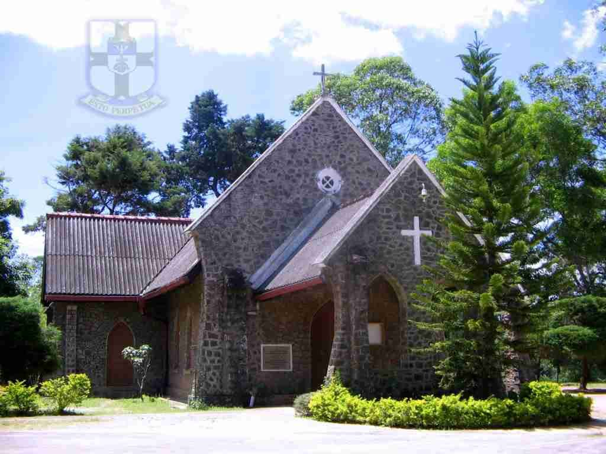

On 20 January 1942 S. Thomas’ Preparatory School was started by Mr. W.T. Keble in Walden Place, Welimada Road, Bandarawela, Sri Lanka. He was also the founder of S. Thomas’ Prep. School. Kollupitiya.
The idea of forming an up country school first entered his mind in 1929 after a visit to Nuwara Eliya, on which occasion he expressed that a school like St. Thomas’ should take advantage of the amenities provided in the up country. But he felt that the cold climate of Nuwara Eliya was not suitable for an average low country boy and therefore explored the possibilities of finding a suitable site.
He felt that Bandarawela would be an ideal place and set about acquiring land there. As a result, in 1942 the Bandarawela branch was started in a rented house. No sooner it was started the war in South and Asia intensified and the premises of St. Thomas’ Kollupitiya was taken by Navy. This situation paved the way for Kollupitiya branch to be temporarily shifted to Bandarawela.
The small rented house was not sufficient. Mr. Keble bought an empty dairy shed which was for sale in Nugegoda and transferred every bit of frame and corrugated sheets to a friend’s land (Mr. H.A.J.Hulugalle’s) on the Golf Links Road, Bandarawela, and erected a large shed to house the school rooms.
The entire school consisted of a Chapel, office, classrooms and tiny two-roomed apartment for Mr.and Mrs.
Keble. The house built by Mr. Hulugalle was also given to be used for the school until the land for the school premises was acquired. While the school was thus going on, Mr.Keble was able to acquire 10 acres of land in the patnas nearby on a 99-year lease to put up the Headmaster’s house and farm.
The school was inaugurated as St. Thomas’ Preparatory School, Bandarawela.
S.Thomas College.
